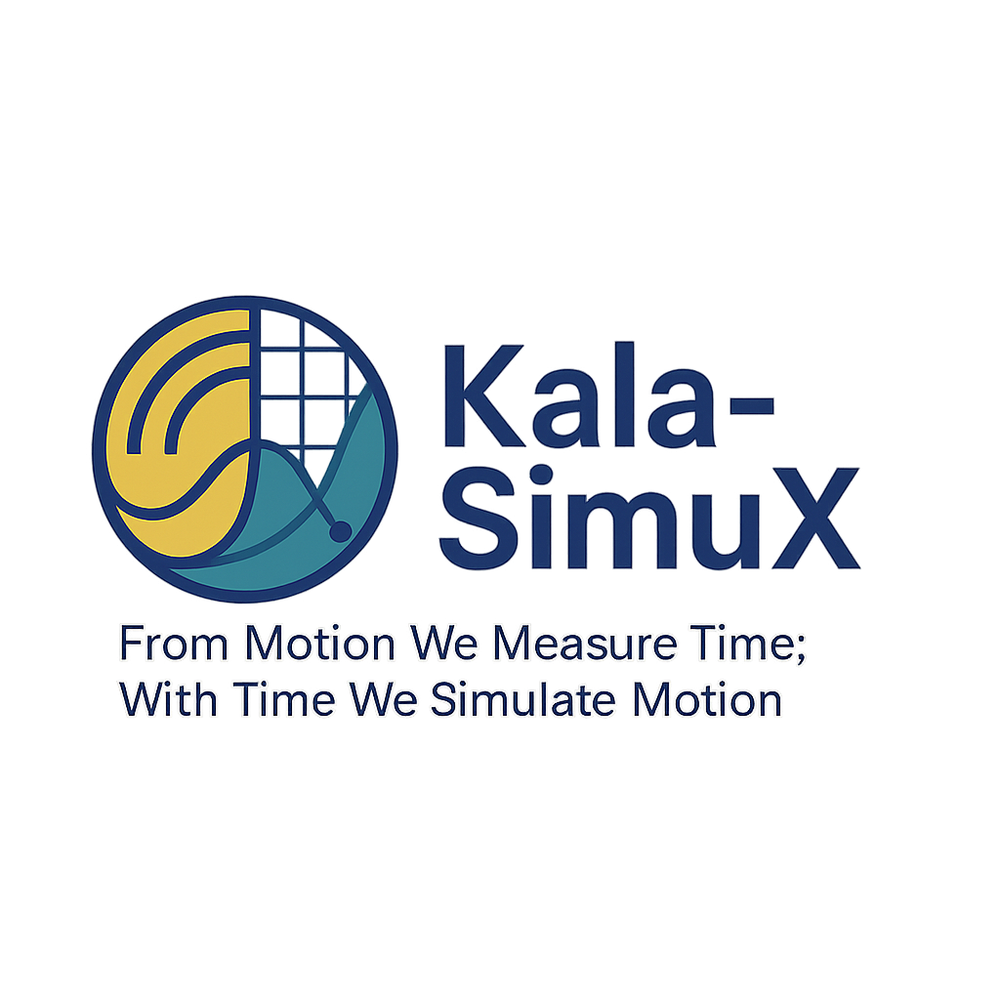

<!DOCTYPE html>
<html lang="en">
<head>
    <meta charset="UTF-8">
    <meta name="viewport" content="width=device-width, initial-scale=1.0, maximum-scale=1.0, user-scalable=no, viewport-fit=cover">
    <meta name="theme-color" content="#ffffff">
    <meta name="mobile-web-app-capable" content="yes">
    
    <link rel="manifest" href="manifest.json">
    
    <title>Kala-SimuX Physics</title>
    
    <script crossorigin src="https://unpkg.com/react@18/umd/react.production.min.js"></script>
    <script crossorigin src="https://unpkg.com/react-dom@18/umd/react-dom.production.min.js"></script>
    <script src="https://unpkg.com/@babel/standalone/babel.min.js"></script>
    <script src="https://cdn.tailwindcss.com"></script>
    
    <script src="https://cdnjs.cloudflare.com/ajax/libs/jspdf/2.5.1/jspdf.umd.min.js"></script>
    <script src="https://cdnjs.cloudflare.com/ajax/libs/jspdf-autotable/3.5.28/jspdf.plugin.autotable.min.js"></script>

    <style>
        /* CORE LAYOUT */
        body { 
            -webkit-tap-highlight-color: transparent; 
            user-select: none; 
            font-family: sans-serif; 
            background-color: #f8fafc; 
            overscroll-behavior-y: none; 
        }
        .no-scrollbar::-webkit-scrollbar { display: none; }
        
        /* 3D CANVAS STYLES */
        canvas { cursor: grab; touch-action: none; }
        canvas:active { cursor: grabbing; }

        /* UI STYLES */
        .scroller::-webkit-scrollbar { width: 4px; height: 4px; }
        .scroller::-webkit-scrollbar-track { background: #0f172a; }
        .scroller::-webkit-scrollbar-thumb { background: #334155; border-radius: 2px; }
        .glass-panel { background: rgba(15, 23, 42, 0.8); backdrop-filter: blur(8px); border-bottom: 1px solid rgba(51, 65, 85, 0.5); }
        .input-field { background: rgba(30, 41, 59, 0.5); border: 1px solid rgba(71, 85, 105, 0.5); color: #fff; font-family: monospace; }
        .input-field:focus { border-color: #3b82f6; outline: none; background: rgba(30, 41, 59, 0.8); }
        .data-table { width: 100%; font-size: 10px; font-family: monospace; border-collapse: collapse; }
        .data-table th { background: #1e293b; position: sticky; top: 0; z-index: 10; text-align: left; padding: 8px; color: #94a3b8; }
        .data-table td { border-bottom: 1px solid #1e293b; padding: 4px 8px; color: #cbd5e1; }
        .data-table tr:nth-child(even) { background: rgba(255,255,255,0.02); }
    </style>
</head>
<body>

<div id="root" class="w-full h-[100dvh] flex flex-col max-w-md mx-auto bg-white shadow-2xl relative overflow-hidden"></div>

<script>
    if ('serviceWorker' in navigator) {
        window.addEventListener('load', () => {
            navigator.serviceWorker.register('sw.js').then(
                registration => console.log('SW Registered!', registration.scope),
                err => console.log('SW Failed:', err)
            );
        });
    }
</script>

<script type="text/babel">
const { useState, useEffect, useRef } = React;

// --- ICONS ---
const Icons = {
    Menu: () => <svg width="24" height="24" fill="none" stroke="#1e293b" strokeWidth="2" strokeLinecap="round" strokeLinejoin="round" viewBox="0 0 24 24"><line x1="3" y1="12" x2="21" y2="12"></line><line x1="3" y1="6" x2="21" y2="6"></line><line x1="3" y1="18" x2="21" y2="18"></line></svg>,
    Back: () => <svg width="24" height="24" fill="none" stroke="#1e293b" strokeWidth="2" strokeLinecap="round" strokeLinejoin="round" viewBox="0 0 24 24"><path d="M19 12H5M12 19l-7-7 7-7"/></svg>,
    Atom: () => <svg width="24" height="24" viewBox="0 0 24 24" fill="none" stroke="currentColor" strokeWidth="2" strokeLinecap="round" strokeLinejoin="round"><circle cx="12" cy="12" r="1"/><path d="M20.2 20.2c2.04-2.03.02-7.36-4.5-11.9-4.54-4.52-9.87-6.54-11.9-4.5-2.04 2.03-.02 7.36 4.5 11.9 4.54 4.52 9.87 6.54 11.9 4.5Z"/><path d="M15.7 15.7c4.52-4.54 6.54-9.87 4.5-11.9-2.03-2.04-7.36-.02-11.9 4.5-4.52 4.54-6.54 9.87-4.5 11.9 2.03 2.04 7.36.02 11.9-4.5Z"/></svg>,
    Book: () => <svg width="24" height="24" fill="none" stroke="currentColor" strokeWidth="2" strokeLinecap="round" strokeLinejoin="round" viewBox="0 0 24 24"><path d="M4 19.5A2.5 2.5 0 0 1 6.5 17H20"/><path d="M6.5 2H20v20H6.5A2.5 2.5 0 0 1 4 19.5v-15A2.5 2.5 0 0 1 6.5 2z"/></svg>,
    Lab: () => <svg width="24" height="24" fill="none" stroke="currentColor" strokeWidth="2" strokeLinecap="round" strokeLinejoin="round" viewBox="0 0 24 24"><path d="M2 12h20"/><path d="M2 12l5-5"/><path d="M22 12l-5 5"/></svg>,
    User: () => <svg width="24" height="24" fill="none" stroke="currentColor" strokeWidth="2" strokeLinecap="round" strokeLinejoin="round" viewBox="0 0 24 24"><path d="M20 21v-2a4 4 0 0 0-4-4H8a4 4 0 0 0-4 4v2"/><circle cx="12" cy="7" r="4"/></svg>,
    Close: () => <svg width="24" height="24" fill="none" stroke="currentColor" strokeWidth="2" strokeLinecap="round" strokeLinejoin="round" viewBox="0 0 24 24"><line x1="18" y1="6" x2="6" y2="18"></line><line x1="6" y1="6" x2="18" y2="18"></line></svg>,
    Play: () => <svg width="16" height="16" fill="currentColor" viewBox="0 0 24 24"><path d="M8 5v14l11-7z"/></svg>,
    Pause: () => <svg width="16" height="16" fill="currentColor" viewBox="0 0 24 24"><path d="M6 19h4V5H6v14zm8-14v14h4V5h-4z"/></svg>,
    Reset: () => <svg width="16" height="16" fill="none" stroke="currentColor" strokeWidth="2" viewBox="0 0 24 24"><path d="M4 4v5h.582m15.356 2A8.001 8.001 0 004.582 9m0 0H9m11 11v-5h-.581m0 0a8.003 8.003 0 01-15.357-2m15.357 2H15"/></svg>,
    Full: () => <svg width="16" height="16" fill="none" stroke="currentColor" strokeWidth="2" viewBox="0 0 24 24"><path d="M15 3h6v6M9 21H3v-6M21 3l-7 7M3 21l7-7"/></svg>,
    YouTube: () => <svg width="24" height="24" fill="#ef4444" viewBox="0 0 24 24"><path d="M19.615 3.184c-3.604-.246-11.631-.245-15.23 0-3.897.266-4.356 2.62-4.385 8.816.029 6.185.484 8.549 4.385 8.816 3.6.245 11.626.246 15.23 0 3.897-.266 4.356-2.62 4.385-8.816-.029-6.185-.484-8.549-4.385-8.816zm-10.615 12.816v-8l8 3.993-8 4.007z"/></svg>
};

// --- 3D CAMERA ---
const useOrbitControls = (ref, initialZoom = 30) => {
    const camera = useRef({ yaw: 0.5, pitch: 0.3, zoom: initialZoom });
    const drag = useRef({ active: false, x: 0, y: 0 });

    useEffect(() => {
        const el = ref.current;
        if(!el) return;

        const start = (e) => {
            drag.current.active = true;
            const t = e.touches ? e.touches[0] : e;
            drag.current.x = t.clientX;
            drag.current.y = t.clientY;
        };
        const move = (e) => {
            if(!drag.current.active) return;
            const t = e.touches ? e.touches[0] : e;
            const dx = t.clientX - drag.current.x;
            const dy = t.clientY - drag.current.y;
            camera.current.yaw += dx * 0.01;
            camera.current.pitch += dy * 0.01;
            camera.current.pitch = Math.max(-Math.PI/2 + 0.1, Math.min(Math.PI/2 - 0.1, camera.current.pitch));
            drag.current.x = t.clientX;
            drag.current.y = t.clientY;
        };
        const end = () => drag.current.active = false;
        
        el.addEventListener('mousedown', start); el.addEventListener('touchstart', start, {passive: false});
        window.addEventListener('mousemove', move); window.addEventListener('touchmove', move, {passive: false});
        window.addEventListener('mouseup', end); window.addEventListener('touchend', end);

        return () => {
            el.removeEventListener('mousedown', start); el.removeEventListener('touchstart', start);
            window.removeEventListener('mousemove', move); window.removeEventListener('touchmove', move);
            window.removeEventListener('mouseup', end); window.removeEventListener('touchend', end);
        };
    }, []);
    return camera;
};

// --- SIM CANVAS ---
const SimCanvas = ({ draw, initZoom=30 }) => {
    const canvasRef = useRef(null);
    const cam = useOrbitControls(canvasRef, initZoom);

    useEffect(() => {
        const cvs = canvasRef.current;
        const ctx = cvs.getContext('2d');
        let fid;

        const render = () => {
            const w = cvs.width = cvs.clientWidth;
            const h = cvs.height = cvs.clientHeight;
            const cx = w/2, cy = h/2;

            ctx.fillStyle = '#020617';
            ctx.fillRect(0,0,w,h);

            const project = (x,y,z) => {
                const { yaw, pitch, zoom } = cam.current;
                let x1 = x * Math.cos(yaw) - z * Math.sin(yaw);
                let z1 = z * Math.cos(yaw) + x * Math.sin(yaw);
                let y2 = y * Math.cos(pitch) - z1 * Math.sin(pitch);
                let z2 = z1 * Math.cos(pitch) + y * Math.sin(pitch);
                const scale = 500 / (500 - z2) * zoom;
                return {
                    x: cx + x1 * scale,
                    y: cy - y2 * scale,
                    s: scale,
                    z: z2
                };
            };

            if(draw) draw(ctx, project, w, h);

            fid = requestAnimationFrame(render);
        };
        render();
        return () => cancelAnimationFrame(fid);
    }, [draw]);

    return <canvas ref={canvasRef} className="w-full h-full block" />;
};

// --- DATA ---
const BOOKS = [
    { 
        id: 1, 
        title: "Electronics and Circuits", 
        desc: "Analog & Digital Systems", 
        color: "bg-purple-100 text-purple-800",
        links: [
            { label: "Google Play", url: "https://play.google.com/store/books/details?id=retaEQAAQBAJ" },
            { label: "Audiobook", url: "https://play.google.com/store/audiobooks/details?id=AQAAAEBKaVwpBM" }
        ]
    },
    { 
        id: 2, 
        title: "Quantum Field Theory", 
        desc: "Advanced Physics", 
        color: "bg-slate-100 text-slate-800",
        links: [
            { label: "Amazon", url: "https://a.co/d/gR8mRuz" },
            { label: "Pothi", url: "https://store.pothi.com/book/abhishek-kumar-quantum-field-theory-3/" }
        ]
    },
    { 
        id: 3, 
        title: "Planetary Motion", 
        desc: "Gravity Dynamics", 
        color: "bg-blue-100 text-blue-800",
        links: [
            { label: "Amazon", url: "https://amzn.in/d/9HdcrQx" },
            { label: "Flipkart", url: "https://www.flipkart.com/gravity-planetary-motion/p/itm84b6b08e673e0" }
        ]
    },
    { 
        id: 4, 
        title: "Relativity: Speed of Light", 
        desc: "Special Relativity", 
        color: "bg-orange-100 text-orange-800",
        links: [
            { label: "Amazon", url: "https://amzn.in/d/36O230l" },
            { label: "Flipkart", url: "https://dl.flipkart.com/s/pO6BTiuuuN" }
        ]
    }
];

const YOUTUBE_VIDEOS = [
    {
        id: "OSpU_nuSSQQ",
        title: "Concept of Angle: Introduction",
        url: "https://youtu.be/OSpU_nuSSQQ?si=HsnScqm9XnpgNmPx"
    },
    {
        id: "FzBTUK1d3qk",
        title: "Degree and Radian: Nakshatra Prediction",
        url: "https://youtu.be/FzBTUK1d3qk?si=mBxve68JnzsmZYji"
    }
];

const SIMS = [
    { id: 'orbit', title: 'N-Body ODE Solver', desc: 'Coupled Differential Equations', color: 'bg-indigo-50 text-indigo-600' },
    { id: 'em', title: 'Electromagnetism', desc: 'Maxwell & Lorentz Dynamics', color: 'bg-violet-50 text-violet-600' },
    { id: 'thermo', title: 'Thermodynamics', desc: 'Stat Mech & 3 Laws', color: 'bg-orange-50 text-orange-600' },
    { id: 'wave', title: 'Wave Motion', desc: 'String, Sound & Light', color: 'bg-pink-50 text-pink-600' },
    { id: 'relativity', title: 'Relativity & Aberration', desc: 'The Speed of Light Paradox', color: 'bg-cyan-50 text-cyan-600' },
];

const PROFILE = { name: "Abhishek Kumar", role: "Physics Faculty (9+ yrs)", details: ["B.Tech (CSE)", "Ex-Faculty: Jaipuria School", "Ex-Faculty: S.P. College Pune", "Expert: Python, LaTeX"] };

// --- HELPERS ---
const parseEq = (eq) => {
    if (!eq) return "0";
    let s = eq.toLowerCase().replace(/\s/g, '').replace(/\^/g, '**');
    ['sin','cos','tan','sqrt','exp','log','abs','pi'].forEach(f => s = s.replaceAll(f, `Math.${f.toUpperCase() === 'PI' ? 'PI' : f}`));
    return s;
};

// --- COMPONENTS ---
const EqInput = ({ label, sub, val, set, color }) => (
    <div className={`bg-slate-900 p-3 rounded border-l-2 ${color} flex flex-col gap-1`}>
        <span className="text-[10px] font-bold text-slate-500 uppercase">{label}</span>
        <div className="flex gap-2 items-center">
            <span className="text-xs font-mono text-slate-400 shrink-0">{sub}</span>
            <input value={val} onChange={e=>set(e.target.value)} className="input-field w-full rounded px-2 py-1 text-xs" spellCheck="false" />
        </div>
    </div>
);

const GraphCard = ({ title, data, x, y, col }) => {
    if(data.length < 2) return <div className="bg-slate-900 h-24 rounded border border-slate-800 flex items-center justify-center text-[10px] text-slate-600">No Data</div>;
    const xs = data.map(d=>d[x]); const ys = data.map(d=>d[y]);
    const minX = Math.min(...xs), maxX = Math.max(...xs);
    const minY = Math.min(...ys), maxY = Math.max(...ys);
    const pts = data.map(d => {
        const px = ((d[x] - minX) / (maxX - minX || 1)) * 100;
        const py = 100 - ((d[y] - minY) / (maxY - minY || 1)) * 100;
        return `${px},${py}`;
    }).join(' ');
    return (
        <div className="bg-slate-900 p-2 rounded border border-slate-800">
            <div className="text-[10px] text-slate-400 mb-1">{title}</div>
            <svg viewBox="0 0 100 100" className="w-full h-16 bg-slate-950/50 rounded overflow-hidden" preserveAspectRatio="none">
                <polyline points={pts} fill="none" stroke={col} strokeWidth="1.5" vectorEffect="non-scaling-stroke" />
            </svg>
        </div>
    );
};

// --- 1. ODESOLVER ---
const ODESolver = () => {
    const PRESETS = {
        shm: { name: "Simple Harmonic", mode: 'newtonian', x: "-4*x", y: "-4*y", z: "-4*z", setup: {x:3, y:2, z:0, vx:0, vy:0, vz:2} },
        lorenz: { name: "Lorenz Attractor", mode: 'flow', x: "10*(y-x)", y: "x*(28-z)-y", z: "x*y - (8/3)*z", setup: {x:0.1, y:0, z:0, vx:0, vy:0, vz:0} },
        gravity: { name: "Orbit (Gravity)", mode: 'newtonian', x: "-100*x / (x^2+y^2)^1.5", y: "-100*y / (x^2+y^2)^1.5", z: "0", setup: {x:5, y:0, z:0, vx:0, vy:4.5, vz:0} }
    };
    const [fullScreen, setFullScreen] = useState(false); const [tab, setTab] = useState('eq'); const [playing, setPlaying] = useState(true);
    const [mode, setMode] = useState('newtonian'); const [eqs, setEqs] = useState({ x: PRESETS.shm.x, y: PRESETS.shm.y, z: PRESETS.shm.z }); const [dt, setDt] = useState(0.02);
    const historyRef = useRef([]); const [displayData, setDisplayData] = useState([]); 
    const bodiesRef = useRef([{ x: 3, y: 2, z: 0, vx: 0, vy: 0, vz: 2, ax: 0, ay: 0, az: 0 }]); 
    const timeRef = useRef(0); const funcRef = useRef(null); 
    
    useEffect(() => { try { funcRef.current = new Function('x','y','z','vx','vy','vz','t', `return { fx: ${parseEq(eqs.x)}, fy: ${parseEq(eqs.y)}, fz: ${parseEq(eqs.z)} };`); } catch(e) { } }, [eqs]);
    const loadPreset = (key) => { const p = PRESETS[key]; setMode(p.mode); setEqs({ x: p.x, y: p.y, z: p.z }); bodiesRef.current = [{ ...p.setup, ax:0, ay:0, az:0 }]; timeRef.current = 0; historyRef.current = []; setDisplayData([]); setDt(p.mode === 'flow' ? 0.01 : 0.02); };
    
    useEffect(() => { 
        let frameId; 
        const loop = () => { 
            if (!playing || !funcRef.current) return; 
            const b = bodiesRef.current[0]; const t = timeRef.current; const calc = funcRef.current;
            const evalState = (x, y, z, vx, vy, vz, t) => { const res = calc(x, y, z, vx, vy, vz, t); return mode === 'newtonian' ? { dx: vx, dy: vy, dz: vz, dvx: res.fx, dvy: res.fy, dvz: res.fz } : { dx: res.fx, dy: res.fy, dz: res.fz, dvx: 0, dvy: 0, dvz: 0 }; };
            try { 
                const k1 = evalState(b.x, b.y, b.z, b.vx, b.vy, b.vz, t); 
                const k2 = evalState(b.x+k1.dx*0.5*dt, b.y+k1.dy*0.5*dt, b.z+k1.dz*0.5*dt, b.vx+k1.dvx*0.5*dt, b.vy+k1.dvy*0.5*dt, b.vz+k1.dvz*0.5*dt, t+0.5*dt); 
                const k3 = evalState(b.x+k2.dx*0.5*dt, b.y+k2.dy*0.5*dt, b.z+k2.dz*0.5*dt, b.vx+k2.dvx*0.5*dt, b.vy+k2.dvy*0.5*dt, b.vz+k2.dvz*0.5*dt, t+0.5*dt); 
                const k4 = evalState(b.x+k3.dx*dt, b.y+k3.dy*dt, b.z+k3.dz*dt, b.vx+k3.dvx*dt, b.vy+k3.dvy*dt, b.vz+k3.dvz*dt, t+dt);
                const nx = b.x + (dt/6)*(k1.dx + 2*k2.dx + 2*k3.dx + k4.dx); const ny = b.y + (dt/6)*(k1.dy + 2*k2.dy + 2*k3.dy + k4.dy); const nz = b.z + (dt/6)*(k1.dz + 2*k2.dz + 2*k3.dz + k4.dz);
                const nvx = b.vx + (dt/6)*(k1.dvx + 2*k2.dvx + 2*k3.dvx + k4.dvx); const nvy = b.vy + (dt/6)*(k1.dvy + 2*k2.dvy + 2*k3.dvy + k4.dvy); const nvz = b.vz + (dt/6)*(k1.dvz + 2*k2.dvz + 2*k3.dvz + k4.dvz);
                const acc = calc(nx, ny, nz, nvx, nvy, nvz, t+dt); const newBody = { x: nx, y: ny, z: nz, vx: nvx, vy: nvy, vz: nvz, ax: acc.fx, ay: acc.fy, az: acc.fz }; 
                bodiesRef.current = [newBody]; timeRef.current += dt; historyRef.current.push(newBody); if (historyRef.current.length > 1500) historyRef.current.shift();
            } catch (err) { setPlaying(false); } 
            frameId = requestAnimationFrame(loop); 
        }; 
        if(playing) loop(); return () => cancelAnimationFrame(frameId); 
    }, [playing, mode, dt]);
    
    useEffect(() => { const id = setInterval(() => { if(playing && historyRef.current.length > 0) { const last = historyRef.current[historyRef.current.length-1]; setDisplayData(prev => { const nu = [...prev, { t: timeRef.current, ...last }]; if(nu.length > 500) return nu.slice(-500); return nu; }); } }, 200); return () => clearInterval(id); }, [playing]);
    
    const draw = (ctx, project, w, h) => {
        const hist = historyRef.current; 
        if (hist.length > 1) { 
            ctx.beginPath(); 
            ctx.strokeStyle = mode === 'flow' ? '#f59e0b' : '#3b82f6'; 
            ctx.lineWidth = mode === 'flow' ? 1 : 2; 
            ctx.globalAlpha = 0.6; 
            for(let i=0; i<hist.length; i+=2) { 
                const p = project(hist[i].x, hist[i].y, hist[i].z); 
                if (i===0) ctx.moveTo(p.x, p.y); else ctx.lineTo(p.x, p.y); 
            } 
            ctx.stroke(); 
            ctx.globalAlpha = 1.0; 
        }
        const b = bodiesRef.current[0]; 
        const p = project(b.x, b.y, b.z); 
        const rad = Math.max(2, 8 * (p.s/20)); 
        const col = mode === 'flow' ? '245, 158, 11' : '59, 130, 246'; 
        const grad = ctx.createRadialGradient(p.x, p.y, rad*0.2, p.x, p.y, rad*3); 
        grad.addColorStop(0, `rgba(${col}, 1)`); 
        grad.addColorStop(1, `rgba(${col}, 0)`); 
        ctx.fillStyle = grad; 
        ctx.globalCompositeOperation = 'screen'; 
        ctx.beginPath(); ctx.arc(p.x, p.y, rad*3, 0, 7); ctx.fill(); 
        ctx.globalCompositeOperation = 'source-over'; 
        ctx.fillStyle = '#fff'; 
        ctx.beginPath(); ctx.arc(p.x, p.y, rad*0.5, 0, 7); ctx.fill(); 
    };

    return ( <div className={`flex flex-col h-[calc(100dvh-60px)] -m-4 relative ${fullScreen ? 'fixed inset-0 z-50 m-0 bg-slate-950' : ''}`}> <div className={`relative transition-all duration-500 bg-slate-900 overflow-hidden shadow-xl z-20 ${fullScreen ? 'absolute inset-0 h-full' : 'h-[35%] shrink-0'}`}> <SimCanvas draw={draw} initZoom={mode === 'flow' ? 6 : 25} /> <div className="absolute top-4 right-4 flex items-center gap-3"> <button onClick={() => { bodiesRef.current = [{x:0.1,y:0,z:0,vx:0,vy:0,vz:0}]; timeRef.current=0; historyRef.current=[]; setDisplayData([]); }} className="p-2 rounded-full bg-slate-800/80 text-slate-400 hover:text-white backdrop-blur"><Icons.Close /></button> <button onClick={() => setPlaying(!playing)} className="p-2 rounded-full bg-blue-600/90 text-white shadow-lg backdrop-blur">{playing ? "||" : "▶"}</button> <button onClick={() => setFullScreen(!fullScreen)} className="p-2 rounded-full bg-slate-800/80 text-slate-400 hover:text-white backdrop-blur">⛶</button> </div> </div> {!fullScreen && ( <div className="flex-1 flex flex-col bg-slate-950 overflow-hidden"> <div className="flex border-b border-slate-800 shrink-0"> {['eq', 'table', 'graph'].map(id => (<button key={id} onClick={() => setTab(id)} className={`flex-1 py-3 text-[10px] font-bold uppercase tracking-widest transition ${tab === id ? 'text-blue-400 bg-slate-900 border-b-2 border-blue-500' : 'text-slate-600 hover:text-slate-400'}`}>{id}</button>))} </div> <div className="flex-1 overflow-hidden relative"> {tab === 'eq' && ( <div className="h-full overflow-y-auto p-4 space-y-4 no-scrollbar"> <div className="flex gap-2 overflow-x-auto pb-2 no-scrollbar">{Object.entries(PRESETS).map(([k, v]) => (<button key={k} onClick={() => loadPreset(k)} className="shrink-0 px-3 py-1 rounded border border-slate-700 text-[10px] font-bold text-slate-400 hover:bg-slate-800 hover:text-white transition">{v.name}</button>))}</div> <div className="grid gap-3"> <EqInput label="X Logic" sub={mode==='newtonian'?"x''=":"x'="} val={eqs.x} set={v=>setEqs({...eqs,x:v})} color="border-blue-500" /> <EqInput label="Y Logic" sub={mode==='newtonian'?"y''=":"y'="} val={eqs.y} set={v=>setEqs({...eqs,y:v})} color="border-purple-500" /> <EqInput label="Z Logic" sub={mode==='newtonian'?"z''=":"z'="} val={eqs.z} set={v=>setEqs({...eqs,z:v})} color="border-emerald-500" /> </div> </div> )} {tab === 'table' && ( <div className="h-full flex flex-col"> <div className="p-2 flex justify-between bg-slate-900 border-b border-slate-800"><span className="text-[10px] text-slate-500 pt-1">Live Data</span><button onClick={()=>{const doc=new jspdf.jsPDF();doc.autoTable({head:[['T','X','Y','V']],body:displayData.map(d=>[d.t.toFixed(3),d.x.toFixed(4),d.y.toFixed(4),d.vx.toFixed(4)])});doc.save('ode_data.pdf')}} className="bg-slate-800 text-white text-[10px] px-3 py-1 rounded border border-slate-700">PDF</button></div> <div className="flex-1 overflow-auto scroller"><table className="data-table"><thead><tr><th>T</th><th>X</th><th>Y</th><th>Vx</th></tr></thead><tbody>{displayData.slice().reverse().map((r, i) => (<tr key={i}><td className="text-blue-400">{r.t.toFixed(3)}</td><td>{r.x.toFixed(4)}</td><td>{r.y.toFixed(4)}</td><td>{r.vx.toFixed(4)}</td></tr>))}</tbody></table></div> </div> )} {tab === 'graph' && (<div className="h-full overflow-y-auto p-4 space-y-4 no-scrollbar"><div className="grid grid-cols-2 gap-3"><GraphCard title="X vs Y" data={displayData} x="x" y="y" col="#3b82f6" /><GraphCard title="X vs T" data={displayData} x="t" y="x" col="#10b981" /></div></div>)} </div> </div> )} </div> );
};

// --- 2. EMSOLVER ---
const EMSolver = () => {
    const PRESETS = { cyclotron: { name: "Cyclotron", Ex: "0", Ey: "0", Ez: "0", Bx: "0", By: "0", Bz: "1", q: 1, m: 1 }, drift: { name: "E x B Drift", Ex: "0", Ey: "1", Ez: "0", Bx: "0", By: "0", Bz: "1", q: 1, m: 1 }, wave: { name: "EM Wave", Ex: "cos(t-z)", Ey: "0", Ez: "0", Bx: "0", By: "cos(t-z)", Bz: "0", q: 1, m: 1 } };
    const [fullScreen, setFullScreen] = useState(false); const [tab, setTab] = useState('fields'); const [playing, setPlaying] = useState(true); const [fields, setFields] = useState(PRESETS.cyclotron); const [dt, setDt] = useState(0.02);
    const historyRef = useRef([]); const [displayData, setDisplayData] = useState([]); const bodiesRef = useRef([{ x: 0, y: 0, z: 0, vx: 2, vy: 0, vz: 0, Ex:0, Ey:0, Ez:0, Bx:0, By:0, Bz:0, Fx:0, Fy:0, Fz:0 }]); const timeRef = useRef(0); const fieldFuncRef = useRef(null); 
    useEffect(() => { try { fieldFuncRef.current = new Function('x','y','z','t', `return { Ex: ${parseEq(fields.Ex)}, Ey: ${parseEq(fields.Ey)}, Ez: ${parseEq(fields.Ez)}, Bx: ${parseEq(fields.Bx)}, By: ${parseEq(fields.By)}, Bz: ${parseEq(fields.Bz)} };`); } catch(e) { } }, [fields]);
    const loadPreset = (key) => { const p = PRESETS[key]; setFields(p); bodiesRef.current = [{ x:0,y:0,z:0,vx:2,vy:0,vz:0,Ex:0,Ey:0,Ez:0,Bx:0,By:0,Bz:0,Fx:0,Fy:0,Fz:0 }]; timeRef.current = 0; historyRef.current = []; setDisplayData([]); };
    
    useEffect(() => { let frameId; const loop = () => { if (!playing || !fieldFuncRef.current) return; const b = bodiesRef.current[0]; const t = timeRef.current; const calc = fieldFuncRef.current; const {q,m} = fields;
            const getAccel = (x, y, z, vx, vy, vz, t) => { const f = calc(x, y, z, t); return { ax: (q/m)*(f.Ex+vy*f.Bz-vz*f.By), ay: (q/m)*(f.Ey+vz*f.Bx-vx*f.Bz), az: (q/m)*(f.Ez+vx*f.By-vy*f.Bx), f }; };
            const k1 = getAccel(b.x, b.y, b.z, b.vx, b.vy, b.vz, t); const k2 = getAccel(b.x+b.vx*0.5*dt, b.y+b.vy*0.5*dt, b.z+b.vz*0.5*dt, b.vx+k1.ax*0.5*dt, b.vy+k1.ay*0.5*dt, b.vz+k1.az*0.5*dt, t+0.5*dt); const k3 = getAccel(b.x+b.vx*0.5*dt, b.y+b.vy*0.5*dt, b.z+b.vz*0.5*dt, b.vx+k2.ax*0.5*dt, b.vy+k2.ay*0.5*dt, b.vz+k2.az*0.5*dt, t+0.5*dt); const k4 = getAccel(b.x+b.vx*dt, b.y+b.vy*dt, b.z+b.vz*dt, b.vx+k3.ax*dt, b.vy+k3.ay*dt, b.vz+k3.az*dt, t+dt);
            const nx = b.x + (dt/6)*(b.vx + 2*(b.vx+k1.ax*0.5*dt) + 2*(b.vx+k2.ax*0.5*dt) + (b.vx+k3.ax*dt)); const nvx = b.vx + (dt/6)*(k1.ax + 2*k2.ax + 2*k3.ax + k4.ax); const nvy = b.vy + (dt/6)*(k1.ay + 2*k2.ay + 2*k3.ay + k4.ay); const nvz = b.vz + (dt/6)*(k1.az + 2*k2.az + 2*k3.az + k4.az); const ny = b.y + b.vy*dt; const nz = b.z + b.vz*dt;
            const f = calc(nx, ny, nz, t+dt); const newBody = { x:nx, y:ny, z:nz, vx:nvx, vy:nvy, vz:nvz, ...f, Fx:k4.ax*m, Fy:k4.ay*m, Fz:k4.az*m }; bodiesRef.current = [newBody]; timeRef.current += dt; historyRef.current.push(newBody); if (historyRef.current.length > 1500) historyRef.current.shift(); frameId = requestAnimationFrame(loop); }; if(playing) loop(); return () => cancelAnimationFrame(frameId); }, [playing, fields, dt]);
    useEffect(() => { const id = setInterval(() => { if(playing && historyRef.current.length > 0) { const last = historyRef.current[historyRef.current.length-1]; setDisplayData(prev => { const nu = [...prev, { t: timeRef.current, ...last }]; if(nu.length > 500) return nu.slice(-500); return nu; }); } }, 200); return () => clearInterval(id); }, [playing]);
    
    const draw = (ctx, project, w, h) => {
        const hist = historyRef.current; 
        if (hist.length > 1) { 
            ctx.beginPath(); 
            ctx.strokeStyle = '#a855f7'; 
            ctx.lineWidth = 2; 
            ctx.globalAlpha = 0.6; 
            for(let i=0; i<hist.length; i+=2) { 
                const p = project(hist[i].x, hist[i].y, hist[i].z); 
                if (i===0) ctx.moveTo(p.x, p.y); else ctx.lineTo(p.x, p.y); 
            } 
            ctx.stroke(); 
            ctx.globalAlpha = 1.0; 
        }
        const b = bodiesRef.current[0]; 
        const p = project(b.x, b.y, b.z); 
        const rad = Math.max(2, 6 * (p.s/20)); 
        ctx.fillStyle = '#fff'; 
        ctx.beginPath(); ctx.arc(p.x, p.y, rad, 0, 7); ctx.fill();
        
        const dv = (vx,vy,vz,c) => { 
            const e = project(b.x+vx*0.5, b.y+vy*0.5, b.z+vz*0.5); 
            ctx.beginPath(); ctx.strokeStyle = c; ctx.lineWidth = 2; 
            ctx.moveTo(p.x, p.y); ctx.lineTo(e.x, e.y); ctx.stroke(); 
        }; 
        dv(b.Ex,b.Ey,b.Ez,'#fbbf24'); 
        dv(b.Bx,b.By,b.Bz,'#22d3ee'); 
        dv(b.Fx,b.Fy,b.Fz,'#ef4444'); 
    };

    return ( <div className={`flex flex-col h-[calc(100dvh-60px)] -m-4 relative ${fullScreen ? 'fixed inset-0 z-50 m-0 bg-slate-950' : ''}`}> <div className={`relative transition-all duration-500 bg-slate-900 overflow-hidden shadow-xl z-20 ${fullScreen ? 'absolute inset-0 h-full' : 'h-[35%] shrink-0'}`}> <SimCanvas draw={draw} initZoom={20} /> <div className="absolute top-4 right-4 flex items-center gap-3"> <button onClick={() => { bodiesRef.current=[{x:0,y:0,z:0,vx:2,vy:0,vz:0,Ex:0,Ey:0,Ez:0,Bx:0,By:0,Bz:0,Fx:0,Fy:0,Fz:0}]; timeRef.current=0; historyRef.current=[]; setDisplayData([]); }} className="p-2 rounded-full bg-slate-800/80 text-slate-400 hover:text-white backdrop-blur"><Icons.Close /></button> <button onClick={() => setPlaying(!playing)} className="p-2 rounded-full bg-blue-600/90 text-white shadow-lg backdrop-blur">{playing ? "||" : "▶"}</button> <button onClick={() => setFullScreen(!fullScreen)} className="p-2 rounded-full bg-slate-800/80 text-slate-400 hover:text-white backdrop-blur">⛶</button> </div> <div className="absolute bottom-4 left-4 text-[10px] font-mono text-slate-400"> <span className="text-yellow-400">E-Field</span> | <span className="text-cyan-400">B-Field</span> | <span className="text-red-400">Force</span> </div> </div> {!fullScreen && ( <div className="flex-1 flex flex-col bg-slate-950 overflow-hidden"> <div className="flex border-b border-slate-800 shrink-0"> {['fields', 'table', 'graph'].map(id => (<button key={id} onClick={() => setTab(id)} className={`flex-1 py-3 text-[10px] font-bold uppercase tracking-widest transition ${tab === id ? 'text-blue-400 bg-slate-900 border-b-2 border-blue-500' : 'text-slate-600 hover:text-slate-400'}`}>{id}</button>))} </div> <div className="flex-1 overflow-hidden relative"> {tab === 'fields' && ( <div className="h-full overflow-y-auto p-4 space-y-4 no-scrollbar"> <div className="bg-slate-900/50 p-4 rounded-xl border border-slate-800 mb-4"> <div className="text-[10px] font-bold text-slate-500 uppercase mb-2">MAXWELL-LORENTZ DYNAMICS</div> <div className="font-mono text-white text-sm">d²r/dt² = (q/m)(E + v × B)</div> </div> <div className="flex gap-2 overflow-x-auto pb-2 no-scrollbar">{Object.entries(PRESETS).map(([k, v]) => (<button key={k} onClick={() => loadPreset(k)} className="shrink-0 px-3 py-1 rounded border border-slate-700 text-[10px] font-bold text-slate-400 hover:bg-slate-800 hover:text-white transition">{v.name}</button>))}</div> <div className="grid grid-cols-2 gap-3"> <div className="space-y-2"><div className="text-[10px] font-bold text-yellow-500">Electric (E)</div><EqInput label="Ex" val={fields.Ex} set={v=>setFields({...fields,Ex:v})} color="border-yellow-500"/><EqInput label="Ey" val={fields.Ey} set={v=>setFields({...fields,Ey:v})} color="border-yellow-500"/><EqInput label="Ez" val={fields.Ez} set={v=>setFields({...fields,Ez:v})} color="border-yellow-500"/></div> <div className="space-y-2"><div className="text-[10px] font-bold text-cyan-500">Magnetic (B)</div><EqInput label="Bx" val={fields.Bx} set={v=>setFields({...fields,Bx:v})} color="border-cyan-500"/><EqInput label="By" val={fields.By} set={v=>setFields({...fields,By:v})} color="border-cyan-500"/><EqInput label="Bz" val={fields.Bz} set={v=>setFields({...fields,Bz:v})} color="border-cyan-500"/></div> </div> </div> )} {tab === 'table' && ( <div className="h-full flex flex-col"> <div className="p-2 flex justify-between bg-slate-900 border-b border-slate-800"><span className="text-[10px] text-slate-500 pt-1">Real-time Data</span><button onClick={()=>{const doc=new jspdf.jsPDF();doc.autoTable({head:[['T','X','Y','Vx','Vy']],body:displayData.map(d=>[d.t.toFixed(3),d.x.toFixed(4),d.y.toFixed(4),d.vx.toFixed(3),d.vy.toFixed(3)])});doc.save('em_data.pdf')}} className="bg-slate-800 text-white text-[10px] px-3 py-1 rounded border border-slate-700">PDF</button></div> <div className="flex-1 overflow-auto scroller"><table className="data-table"><thead><tr><th>T</th><th>X</th><th>Y</th><th>Vx</th><th>Vy</th></tr></thead><tbody>{displayData.slice().reverse().map((r, i) => (<tr key={i}><td className="text-blue-400">{r.t.toFixed(3)}</td><td>{r.x.toFixed(4)}</td><td>{r.y.toFixed(4)}</td><td>{r.vx.toFixed(3)}</td><td>{r.vy.toFixed(3)}</td></tr>))}</tbody></table></div> </div> )} {tab === 'graph' && (<div className="h-full overflow-y-auto p-4 space-y-4 no-scrollbar"><div className="grid grid-cols-2 gap-3"><GraphCard title="Pos X-Y" data={displayData} x="x" y="y" col="#fbbf24" /><GraphCard title="Phase Vx-Vy" data={displayData} x="vx" y="vy" col="#22d3ee" /></div></div>)} </div> </div> )} </div> );
};

// --- 3. THERMOSOLVER ---
const ThermoSolver = () => {
    const PRESETS = {
        zero: { name: "Zeroth Law (Mixing)", force: "0", setup: "mixing" },
        first: { name: "First Law (Work)", force: "0", setup: "work" },
        second: { name: "Second Law (Entropy)", force: "0", setup: "entropy" },
        real: { name: "Real Gas (VDW)", force: "4*((1/r)**12 - (1/r)**6)", setup: "mixing" }
    };
    const [fullScreen, setFullScreen] = useState(false); const [tab, setTab] = useState('lab'); const [playing, setPlaying] = useState(true);
    const [config, setConfig] = useState({ N: 80, force: "0", heat: 0.5, volume: 1.0 });
    const bodiesRef = useRef([]); const statsRef = useRef({ P:0, T:0, V:0, S:0, U:0 }); const timeRef = useRef(0);
    const [displayData, setDisplayData] = useState([]);
    const funcRef = useRef(null);
    
    // Init Particles (3D Logic)
    const init = (mode) => {
        let arr = []; const N = config.N;
        for(let i=0; i<N; i++) {
            let x, y, z, vx, vy, vz, color;
            if(mode === 'mixing') {
                if(i < N/2) { x = Math.random()*40+5; y = Math.random()*40+5; z = Math.random()*40+5; vx = (Math.random()-0.5)*4; vy = (Math.random()-0.5)*4; vz = (Math.random()-0.5)*4; color = '#ef4444'; } 
                else { x = Math.random()*40+55; y = Math.random()*40+5; z = Math.random()*40+5; vx = (Math.random()-0.5)*1; vy = (Math.random()-0.5)*1; vz = (Math.random()-0.5)*1; color = '#3b82f6'; }
            } else if (mode === 'work') {
                x = Math.random()*90+5; y = Math.random()*40+5; z = Math.random()*40+5; vx = (Math.random()-0.5)*3; vy = (Math.random()-0.5)*3; vz = (Math.random()-0.5)*3; color = '#fbbf24';
            } else { 
                x = Math.random()*20+5; y = Math.random()*20+5; z = Math.random()*20+5; vx = (Math.random()-0.5)*5; vy = (Math.random()-0.5)*5; vz = (Math.random()-0.5)*5; color = '#10b981';
            }
            arr.push({ x, y, z, vx, vy, vz, color });
        }
        bodiesRef.current = arr; timeRef.current = 0; setDisplayData([]);
    };
    useEffect(() => init(PRESETS.zero.setup), []);

    // Physics Loop (3D Upgrade)
    useEffect(() => {
        if(!playing) return;
        try { funcRef.current = new Function('r', `return ${parseEq(config.force)}`); } catch(e) { return; }
        let frame;
        const loop = () => {
            const dt = 0.1; const boxW = 100 * config.volume; const boxH = 50; const boxD = 50;
            let P_impulse = 0; let KE = 0;
            const forceFunc = funcRef.current;
            
            // 1. Forces (Simplified N^2)
            if(config.force !== "0" && forceFunc) {
                for(let i=0; i<bodiesRef.current.length; i++){
                    for(let j=i+1; j<bodiesRef.current.length; j++){
                        const b1 = bodiesRef.current[i]; const b2 = bodiesRef.current[j];
                        const dx = b2.x - b1.x; const dy = b2.y - b1.y; const dz = b2.z - b1.z;
                        const r2 = dx*dx + dy*dy + dz*dz;
                        if(r2 < 64 && r2 > 0.1) {
                            const r = Math.sqrt(r2); const f = forceFunc(r);
                            const fx = f * dx/r; const fy = f * dy/r; const fz = f * dz/r;
                            b1.vx -= fx*dt; b1.vy -= fy*dt; b1.vz -= fz*dt;
                            b2.vx += fx*dt; b2.vy += fy*dt; b2.vz += fz*dt;
                        }
                    }
                }
            }

            // 2. Move & Walls
            bodiesRef.current.forEach(b => {
                b.x += b.vx * dt; b.y += b.vy * dt; b.z += b.vz * dt;
                if(Math.random() < 0.05) { b.vx += (Math.random()-0.5)*config.heat; b.vy += (Math.random()-0.5)*config.heat; b.vz += (Math.random()-0.5)*config.heat; }
                
                if(b.x < 0) { b.x = 0; b.vx *= -1; P_impulse += Math.abs(b.vx); }
                if(b.x > boxW) { b.x = boxW; b.vx *= -1; P_impulse += Math.abs(b.vx); }
                if(b.y < 0) { b.y = 0; b.vy *= -1; P_impulse += Math.abs(b.vy); }
                if(b.y > boxH) { b.y = boxH; b.vy *= -1; P_impulse += Math.abs(b.vy); }
                if(b.z < 0) { b.z = 0; b.vz *= -1; P_impulse += Math.abs(b.vz); }
                if(b.z > boxD) { b.z = boxD; b.vz *= -1; P_impulse += Math.abs(b.vz); }
                
                KE += 0.5 * (b.vx**2 + b.vy**2 + b.vz**2);
                const speed = Math.sqrt(b.vx**2 + b.vy**2 + b.vz**2);
                b.color = speed > 3 ? '#ef4444' : speed > 1.5 ? '#fbbf24' : '#3b82f6';
            });

            timeRef.current += dt;
            if(Math.random() > 0.9) {
                statsRef.current.P = P_impulse / (dt * 100);
                statsRef.current.T = KE / bodiesRef.current.length;
                statsRef.current.V = boxW * boxH * boxD;
                statsRef.current.S = Math.log(Math.max(1, KE)) + Math.log(Math.max(1, boxW)); 
            }
            frame = requestAnimationFrame(loop);
        };
        loop(); return () => cancelAnimationFrame(frame);
    }, [playing, config]);

    useEffect(() => { const id = setInterval(() => { if(playing) { const s = statsRef.current; setDisplayData(p => { const n = [...p, { t: timeRef.current, ...s }]; return n.length > 500 ? n.slice(-500) : n; }); } }, 200); return () => clearInterval(id); }, [playing]);

    const draw = (ctx, project, w, h) => {
        const boxW = 100*config.volume; const boxH = 50; const boxD = 50;
        const corners = [ [0,0,0], [boxW,0,0], [boxW,boxH,0], [0,boxH,0], [0,0,boxD], [boxW,0,boxD], [boxW,boxH,boxD], [0,boxH,boxD] ].map(c => project(c[0]-boxW/2, c[1]-boxH/2, c[2]-boxD/2));
        ctx.strokeStyle = '#475569'; ctx.lineWidth = 1;
        const edges = [[0,1],[1,2],[2,3],[3,0], [4,5],[5,6],[6,7],[7,4], [0,4],[1,5],[2,6],[3,7]];
        edges.forEach(e => { ctx.beginPath(); ctx.moveTo(corners[e[0]].x, corners[e[0]].y); ctx.lineTo(corners[e[1]].x, corners[e[1]].y); ctx.stroke(); });
        
        bodiesRef.current.forEach(b => {
            const p = project(b.x-boxW/2, b.y-boxH/2, b.z-boxD/2);
            ctx.fillStyle = b.color; ctx.beginPath(); ctx.arc(p.x, p.y, Math.max(2, 5*(p.s/20)), 0, 7); ctx.fill();
        });
    };

    return ( <div className={`flex flex-col h-[calc(100dvh-60px)] -m-4 relative ${fullScreen ? 'fixed inset-0 z-50 m-0 bg-slate-950' : ''}`}> <div className={`relative transition-all duration-500 bg-slate-900 overflow-hidden shadow-xl z-20 ${fullScreen ? 'absolute inset-0 h-full' : 'h-[35%] shrink-0'}`}> <SimCanvas draw={draw} initZoom={15} /> <div className="absolute top-4 right-4 flex items-center gap-3"> <button onClick={() => init('mixing')} className="p-2 rounded-full bg-slate-800/80 text-slate-400 hover:text-white backdrop-blur"><Icons.Close /></button> <button onClick={() => setPlaying(!playing)} className="p-2 rounded-full bg-blue-600/90 text-white shadow-lg backdrop-blur">{playing ? "||" : "▶"}</button> <button onClick={() => setFullScreen(!fullScreen)} className="p-2 rounded-full bg-slate-800/80 text-slate-400 hover:text-white backdrop-blur">⛶</button> </div> <div className="absolute bottom-4 left-4 text-[10px] font-mono text-slate-400 flex gap-4"> <span>P: {statsRef.current.P.toFixed(2)}</span><span>T: {statsRef.current.T.toFixed(2)}</span><span>S: {statsRef.current.S.toFixed(2)}</span> </div> </div> {!fullScreen && ( <div className="flex-1 flex flex-col bg-slate-950 overflow-hidden"> <div className="flex border-b border-slate-800 shrink-0"> {['lab', 'table', 'graph'].map(id => (<button key={id} onClick={() => setTab(id)} className={`flex-1 py-3 text-[10px] font-bold uppercase tracking-widest transition ${tab === id ? 'text-blue-400 bg-slate-900 border-b-2 border-blue-500' : 'text-slate-600 hover:text-slate-400'}`}>{id}</button>))} </div> <div className="flex-1 overflow-hidden relative"> {tab === 'lab' && ( <div className="h-full overflow-y-auto p-4 space-y-4 no-scrollbar"> <div className="flex gap-2 overflow-x-auto pb-2 no-scrollbar">{Object.entries(PRESETS).map(([k, v]) => (<button key={k} onClick={() => { setConfig({...config, force:v.force}); init(v.setup); }} className="shrink-0 px-3 py-1 rounded border border-slate-700 text-[10px] font-bold text-slate-400 hover:bg-slate-800 hover:text-white transition">{v.name}</button>))}</div> <div className="grid gap-4"> <div className="space-y-2"><div className="text-[10px] font-bold text-orange-500 uppercase">Process Control</div> <div className="glass-panel p-3 rounded flex flex-col gap-2"> <div className="flex justify-between text-xs text-slate-400"><span>Heat Injection (T)</span><span>{config.heat}</span></div> <input type="range" min="0" max="2" step="0.1" value={config.heat} onChange={e=>setConfig({...config, heat:parseFloat(e.target.value)})} className="w-full h-1 bg-orange-900 rounded appearance-none accent-orange-500" /> <div className="flex justify-between text-xs text-slate-400 mt-2"><span>Volume (V)</span><span>{config.volume}</span></div> <input type="range" min="0.3" max="1" step="0.1" value={config.volume} onChange={e=>setConfig({...config, volume:parseFloat(e.target.value)})} className="w-full h-1 bg-blue-900 rounded appearance-none accent-blue-500" /> </div> </div> <EqInput label="Interaction Potential F(r)" sub="Force =" val={config.force} set={v=>setConfig({...config, force:v})} color="border-emerald-500" /> </div> </div> )} {tab === 'table' && ( <div className="h-full flex flex-col"> <div className="p-2 flex justify-between bg-slate-900 border-b border-slate-800"><span className="text-[10px] text-slate-500 pt-1">Thermodynamic State</span><button onClick={()=>{const doc=new jspdf.jsPDF();doc.autoTable({head:[['Time','P','V','T','S']],body:displayData.map(d=>[d.t.toFixed(2),d.P.toFixed(2),d.V.toFixed(0),d.T.toFixed(2),d.S.toFixed(3)])});doc.save('thermo_data.pdf')}} className="bg-slate-800 text-white text-[10px] px-3 py-1 rounded border border-slate-700">PDF</button></div> <div className="flex-1 overflow-auto scroller"><table className="data-table"><thead><tr><th>t</th><th>P</th><th>V</th><th>T</th><th>S</th></tr></thead><tbody>{displayData.slice().reverse().map((r, i) => (<tr key={i}><td className="text-blue-400">{r.t.toFixed(1)}</td><td>{r.P.toFixed(2)}</td><td>{r.V.toFixed(0)}</td><td>{r.T.toFixed(2)}</td><td>{r.S.toFixed(2)}</td></tr>))}</tbody></table></div> </div> )} {tab === 'graph' && (<div className="h-full overflow-y-auto p-4 space-y-4 no-scrollbar"><div className="grid grid-cols-2 gap-3"><GraphCard title="PV Diagram" data={displayData} x="V" y="P" col="#fbbf24" /><GraphCard title="Entropy vs Time" data={displayData} x="t" y="S" col="#10b981" /></div></div>)} </div> </div> )} </div> );
};

// --- 4. WAVESOLVER ---
const WaveSolver = () => {
    const PRESETS = {
        string: { name: "String (Transverse)", type: 'trans', eq: "3 * sin(x - 2*t)", desc: "y = A sin(kx - wt)" },
        sound: { name: "Sound (Pressure)", type: 'long', eq: "3 * cos(x - 3*t)", desc: "y represents density" },
        light: { name: "Light (EM)", type: 'light', eq: "3 * sin(x - 4*t)", desc: "E & B Fields" },
        beat: { name: "Beats", type: 'trans', eq: "2*sin(x-10*t) + 2*sin(x-12*t)", desc: "Superposition" }
    };
    const [fullScreen, setFullScreen] = useState(false); const [tab, setTab] = useState('sim'); const [playing, setPlaying] = useState(true);
    const [config, setConfig] = useState(PRESETS.string); const [eqStr, setEqStr] = useState(PRESETS.string.eq);
    const timeRef = useRef(0); const funcRef = useRef(null); const [displayData, setDisplayData] = useState([]);

    useEffect(() => { try { funcRef.current = new Function('x','t', `return ${parseEq(eqStr)}`); } catch(e) {} }, [eqStr]);

    // Physics Loop
    useEffect(() => {
        if(!playing) return;
        let frame;
        const loop = () => {
            timeRef.current += 0.05;
            if(funcRef.current && Math.random() > 0.8) {
                const y0 = funcRef.current(0, timeRef.current);
                setDisplayData(p => { const n = [...p, { t: timeRef.current, y: y0 }]; return n.length > 500 ? n.slice(-500) : n; });
            }
            frame = requestAnimationFrame(loop);
        };
        loop(); return () => cancelAnimationFrame(frame);
    }, [playing]);

    const draw = (ctx, project, w, h) => {
        const t = timeRef.current;
        const f = funcRef.current;
        if(!f) return;

        // Draw Axis
        const start = project(-20, 0, 0); const end = project(20, 0, 0);
        ctx.beginPath(); ctx.strokeStyle = '#334155'; ctx.moveTo(start.x, start.y); ctx.lineTo(end.x, end.y); ctx.stroke();

        const points = [];
        for(let x = -15; x <= 15; x += 0.5) {
            const y = f(x, t);
            points.push({x, y});
        }

        if(config.type === 'trans' || config.type === 'beat') {
            ctx.beginPath(); ctx.strokeStyle = '#ec4899'; ctx.lineWidth = 2;
            points.forEach((pt, i) => {
                const p = project(pt.x, pt.y, 0);
                if(i===0) ctx.moveTo(p.x, p.y); else ctx.lineTo(p.x, p.y);
                // Particle view
                ctx.fillStyle = '#fbcfe8'; ctx.beginPath(); ctx.arc(p.x, p.y, 2, 0, 7); ctx.fill();
            });
            ctx.stroke();
        } 
        else if (config.type === 'long') {
            // Longitudinal: Map amplitude to X-displacement
            points.forEach(pt => {
                const dx = pt.y * 0.3; // Scale amp to displacement
                const p = project(pt.x + dx, 0, 0);
                // Draw vertical lines to show compression
                const top = project(pt.x + dx, 2, 0); const bot = project(pt.x + dx, -2, 0);
                ctx.beginPath(); ctx.strokeStyle = `rgba(236, 72, 153, ${0.3 + Math.abs(pt.y)*0.2})`; 
                ctx.moveTo(top.x, top.y); ctx.lineTo(bot.x, bot.y); ctx.stroke();
                // Particles
                ctx.fillStyle = '#ec4899'; ctx.beginPath(); ctx.arc(p.x, p.y, Math.max(1, 4-Math.abs(dx)), 0, 7); ctx.fill();
            });
        }
        else if (config.type === 'light') {
            // E-Field (Vertical)
            ctx.beginPath(); ctx.strokeStyle = '#fbbf24'; ctx.lineWidth = 2;
            points.forEach((pt, i) => { const p = project(pt.x, pt.y, 0); if(i===0) ctx.moveTo(p.x, p.y); else ctx.lineTo(p.x, p.y); });
            ctx.stroke();
            // B-Field (Horizontal/Z)
            ctx.beginPath(); ctx.strokeStyle = '#22d3ee'; ctx.lineWidth = 2;
            points.forEach((pt, i) => { const p = project(pt.x, 0, pt.y); if(i===0) ctx.moveTo(p.x, p.y); else ctx.lineTo(p.x, p.y); });
            ctx.stroke();
            // Vectors
            points.forEach((pt, i) => {
                if(i%4!==0) return;
                const o = project(pt.x, 0, 0); const pe = project(pt.x, pt.y, 0); const pb = project(pt.x, 0, pt.y);
                ctx.beginPath(); ctx.strokeStyle='#fbbf2444'; ctx.moveTo(o.x, o.y); ctx.lineTo(pe.x, pe.y); ctx.stroke();
                ctx.beginPath(); ctx.strokeStyle='#22d3ee44'; ctx.moveTo(o.x, o.y); ctx.lineTo(pb.x, pb.y); ctx.stroke();
            });
        }
    };

    return ( <div className={`flex flex-col h-[calc(100dvh-60px)] -m-4 relative ${fullScreen ? 'fixed inset-0 z-50 m-0 bg-slate-950' : ''}`}> <div className={`relative transition-all duration-500 bg-slate-900 overflow-hidden shadow-xl z-20 ${fullScreen ? 'absolute inset-0 h-full' : 'h-[35%] shrink-0'}`}> <SimCanvas draw={draw} initZoom={25} /> <div className="absolute top-4 right-4 flex items-center gap-3"> <button onClick={() => { timeRef.current=0; setDisplayData([]); }} className="p-2 rounded-full bg-slate-800/80 text-slate-400 hover:text-white backdrop-blur"><Icons.Reset /></button> <button onClick={() => setPlaying(!playing)} className="p-2 rounded-full bg-blue-600/90 text-white shadow-lg backdrop-blur">{playing ? "||" : "▶"}</button> <button onClick={() => setFullScreen(!fullScreen)} className="p-2 rounded-full bg-slate-800/80 text-slate-400 hover:text-white backdrop-blur">⛶</button> </div> <div className="absolute bottom-4 left-4 text-[10px] font-mono text-slate-400"> <span className="text-pink-400 font-bold">{config.name}</span> | y(x,t) </div> </div> {!fullScreen && ( <div className="flex-1 flex flex-col bg-slate-950 overflow-hidden"> <div className="flex border-b border-slate-800 shrink-0"> {['sim', 'table', 'graph'].map(id => (<button key={id} onClick={() => setTab(id)} className={`flex-1 py-3 text-[10px] font-bold uppercase tracking-widest transition ${tab === id ? 'text-blue-400 bg-slate-900 border-b-2 border-blue-500' : 'text-slate-600 hover:text-slate-400'}`}>{id}</button>))} </div> <div className="flex-1 overflow-hidden relative"> {tab === 'sim' && ( <div className="h-full overflow-y-auto p-4 space-y-4 no-scrollbar"> <div className="bg-slate-900/50 p-4 rounded-xl border border-slate-800 mb-4"> <div className="text-[10px] font-bold text-slate-500 uppercase mb-2">Wave Equation</div> <div className="font-mono text-white text-sm">y(x,t) = A sin(kx - ωt + φ)</div> </div> <div className="flex gap-2 overflow-x-auto pb-2 no-scrollbar">{Object.entries(PRESETS).map(([k, v]) => (<button key={k} onClick={() => { setConfig(v); setEqStr(v.eq); }} className="shrink-0 px-3 py-1 rounded border border-slate-700 text-[10px] font-bold text-slate-400 hover:bg-slate-800 hover:text-white transition">{v.name}</button>))}</div> <EqInput label="Wave Function y(x,t)" sub="y =" val={eqStr} set={setEqStr} color="border-pink-500" /> </div> )} {tab === 'table' && ( <div className="h-full flex flex-col"> <div className="p-2 flex justify-between bg-slate-900 border-b border-slate-800"><span className="text-[10px] text-slate-500 pt-1">Source Displacement (x=0)</span><button onClick={()=>{const doc=new jspdf.jsPDF();doc.autoTable({head:[['Time','Y (x=0)']],body:displayData.map(d=>[d.t.toFixed(2),d.y.toFixed(4)])});doc.save('wave_data.pdf')}} className="bg-slate-800 text-white text-[10px] px-3 py-1 rounded border border-slate-700">PDF</button></div> <div className="flex-1 overflow-auto scroller"><table className="data-table"><thead><tr><th>t</th><th>y (x=0)</th></tr></thead><tbody>{displayData.slice().reverse().map((r, i) => (<tr key={i}><td className="text-blue-400">{r.t.toFixed(2)}</td><td>{r.y.toFixed(4)}</td></tr>))}</tbody></table></div> </div> )} {tab === 'graph' && (<div className="h-full overflow-y-auto p-4 space-y-4 no-scrollbar"><GraphCard title="Source Oscillation (y vs t at x=0)" data={displayData} x="t" y="y" col="#ec4899" /></div>)} </div> </div> )} </div> );
};

// --- 5. RELATIVITY SOLVER (NEW: REPLACES OPTICS) ---
// --- 5. RELATIVITY SOLVER (UPDATED: INFOGRAPHIC MODE) ---
const RelativitySolver = () => {
    const [fullScreen, setFullScreen] = useState(false); 
    const [tab, setTab] = useState('story'); 
    const [speed, setSpeed] = useState(50); // Default speed
    const timeRef = useRef(0);

    // --- PHYSICS LOOP ---
    useEffect(() => {
        let frame;
        const loop = () => { 
            timeRef.current += 1; 
            frame = requestAnimationFrame(loop); 
        };
        loop(); 
        return () => cancelAnimationFrame(frame);
    }, []);

    // --- CANVAS DRAWING (The Rain/Umbrella Analogy) ---
    const draw = (ctx, project, w, h) => {
        const t = timeRef.current;
        // Calculate Angle based on speed (v/c)
        // We exaggerate the effect for visualization: max speed 100 results in ~45 degrees
        const angle = Math.atan(speed / 100); 
        
        // 1. Background (Deep Space)
        const gradient = ctx.createLinearGradient(0, 0, 0, h);
        gradient.addColorStop(0, '#0f172a');
        gradient.addColorStop(1, '#1e293b');
        ctx.fillStyle = gradient;
        ctx.fillRect(0,0,w,h);

        // 2. Stars (Gamma Draconis context)
        ctx.fillStyle = '#ffffff';
        for(let i=0; i<30; i++) {
            const sx = (i*67) % w;
            const sy = (i*43) % h;
            const flicker = Math.sin(t * 0.1 + i) > 0.9 ? 1.5 : 1;
            ctx.globalAlpha = (Math.sin(t * 0.05 + i) + 1) / 2 * 0.5;
            ctx.beginPath(); ctx.arc(sx, sy, 1 * flicker, 0, 7); ctx.fill();
        }
        ctx.globalAlpha = 1.0;

        // 3. Highlight Gamma Draconis (The Target)
        const starX = w/2; const starY = 40;
        ctx.shadowBlur = 15; ctx.shadowColor = '#fbbf24';
        ctx.fillStyle = '#fbbf24';
        ctx.beginPath(); ctx.arc(starX, starY, 4, 0, 7); ctx.fill();
        ctx.shadowBlur = 0;

        // 4. The "Rain" of Light
        // Light falls straight down relative to space
        ctx.strokeStyle = '#94a3b8'; 
        ctx.lineWidth = 1.5;
        const dropSpeed = 5; 
        
        // To simulate the "Runner's perspective" in the frame, 
        // if the runner moves Right, the rain appears to move Left.
        // But here we draw the "Absolute Frame" (Rain straight) and the "Telescope" tilted.
        
        const cx = w/2; const runnerY = h - 60;

        // Draw Raindrops
        for(let x = -250; x < 250; x+=25) {
            const dropOffset = (t * dropSpeed + x * 33) % h; // looping Y
            const rx = cx + x; 
            
            // Draw straight rain (Absolute Reality)
            ctx.beginPath(); 
            ctx.strokeStyle = 'rgba(148, 163, 184, 0.3)'; // Faint straight lines
            ctx.moveTo(rx, dropOffset); 
            ctx.lineTo(rx, dropOffset + 25); 
            ctx.stroke();

            // Draw "Apparent" rain (Relative to Runner) if speed > 0
            // This visualizes what the runner "sees" (slanted rain)
            if(speed > 5) {
                const slantX = Math.tan(angle) * 25;
                ctx.beginPath();
                ctx.strokeStyle = 'rgba(250, 204, 21, 0.6)'; // Yellowish slanted light
                ctx.moveTo(rx, dropOffset);
                ctx.lineTo(rx - slantX, dropOffset + 25);
                ctx.stroke();
            }
        }

        // 5. The Runner (Earth)
        // We keep Earth centered, but the "Universe" moves past it conceptually, 
        // or we just show the tilt.
        
        // Draw The Telescope (Umbrella)
        const len = 50;
        const ex = cx + Math.sin(angle) * len; // Tilted tip
        const ey = runnerY - Math.cos(angle) * len;

        // Scope Body
        ctx.strokeStyle = '#38bdf8'; // Cyan telescope
        ctx.lineWidth = 4;
        ctx.lineCap = 'round';
        ctx.beginPath(); ctx.moveTo(cx, runnerY); ctx.lineTo(ex, ey); ctx.stroke();

        // Eye Piece
        ctx.fillStyle = '#38bdf8';
        ctx.beginPath(); ctx.arc(cx, runnerY, 6, 0, 7); ctx.fill();

        // 6. Data Overlay on Canvas
        ctx.fillStyle = '#fff';
        ctx.font = 'bold 12px monospace';
        ctx.textAlign = 'left';
        ctx.fillText(`v (Speed): ${speed} km/s`, 20, h-30);
        ctx.fillText(`θ (Tilt): ${(angle * 180/Math.PI).toFixed(1)}°`, 20, h-15);
    };

    return ( 
        <div className={`flex flex-col h-[calc(100dvh-60px)] -m-4 relative ${fullScreen ? 'fixed inset-0 z-50 m-0 bg-slate-950' : ''}`}> 
            
            {/* TOP PANEL: SIMULATION CANVAS */}
            <div className={`relative transition-all duration-500 bg-slate-900 overflow-hidden shadow-xl z-20 ${fullScreen ? 'absolute inset-0 h-full' : 'h-[40%] shrink-0'}`}> 
                <SimCanvas draw={draw} initZoom={25} /> 
                
                {/* Overlay Controls */}
                <div className="absolute top-4 right-4 flex items-center gap-3"> 
                    <button onClick={() => setFullScreen(!fullScreen)} className="p-2 rounded-full bg-slate-800/80 text-slate-400 hover:text-white backdrop-blur">⛶</button> 
                </div> 
                
                <div className="absolute bottom-4 right-4 text-[10px] font-mono text-slate-400 text-right"> 
                    <div className="flex items-center gap-2 justify-end">
                        <span className="w-2 h-2 rounded-full bg-slate-500"></span> सत्य (Straight Rain)
                    </div>
                    <div className="flex items-center gap-2 justify-end">
                        <span className="w-2 h-2 rounded-full bg-yellow-400"></span> आभास (Apparent Path)
                    </div>
                </div> 
            </div> 

            {/* BOTTOM PANEL: STORY & CONTROLS */}
            {!fullScreen && ( 
                <div className="flex-1 flex flex-col bg-slate-950 overflow-hidden border-t border-slate-800"> 
                    
                    {/* TABS */}
                    <div className="flex border-b border-slate-800 shrink-0 bg-slate-900"> 
                        <button onClick={() => setTab('story')} className={`flex-1 py-3 text-[10px] font-bold uppercase tracking-widest transition ${tab === 'story' ? 'text-yellow-400 border-b-2 border-yellow-500 bg-slate-800' : 'text-slate-500'}`}>The Story</button>
                        <button onClick={() => setTab('data')} className={`flex-1 py-3 text-[10px] font-bold uppercase tracking-widest transition ${tab === 'data' ? 'text-cyan-400 border-b-2 border-cyan-500 bg-slate-800' : 'text-slate-500'}`}>Data & Facts</button>
                    </div> 

                    {/* SCROLLABLE CONTENT */}
                    <div className="flex-1 overflow-y-auto scroller relative"> 
                        
                        {tab === 'story' && ( 
                            <div className="p-6 space-y-8 pb-20">
                                
                                {/* CHAPTER 1 */}
                                <div className="animate-in fade-in slide-in-from-bottom-4 duration-700">
                                    <h3 className="text-yellow-500 font-bold text-xs uppercase tracking-widest mb-2">1669: द बिगिनिंग</h3>
                                    <h1 className="text-2xl font-bold text-white mb-4">गामा ड्रैकोनिस: एक खोज</h1>
                                    <p className="text-slate-300 text-sm leading-7">
                                        यह कथा ड्रैगन के सिर पर स्थित एक तारे, <strong>'गामा ड्रैकोनिस'</strong> की है, और उससे भी अधिक यह कथा मनुष्य की उस दृष्टि की है जो सत्य को खोजना चाहती है।
                                    </p>
                                    <p className="text-slate-300 text-sm leading-7 mt-4">
                                        वर्ष 1669 में <strong>रॉबर्ट हुक</strong> ने अपनी दूरबीन इस तारे पर साधी। वह कोपरनिकस के सिद्धांत—कि पृथ्वी सूर्य का चक्कर लगाती है—का प्रमाण खोज रहा था। उसे तारे की स्थिति में एक बड़ा बदलाव दिखा। हुक ने उसे <span className="text-cyan-400 font-bold">'पॅरलॅक्स' (Parallax/दृष्टि-भेद)</span> मान लिया।
                                    </p>
                                </div>

                                {/* CHAPTER 2 */}
                                <div className="border-l-2 border-slate-700 pl-4 py-2 my-6">
                                    <h4 className="text-white font-bold text-lg mb-2">पॅरलॅक्स: दूरी का भ्रम</h4>
                                    <p className="text-slate-400 text-xs italic mb-3">
                                        "पॅरलॅक्स दूरी का खेल है।"
                                    </p>
                                    <p className="text-slate-300 text-sm leading-6">
                                        जैसे ट्रेन में चलते हुए पास के पेड़ तेज़ी से पीछे भागते दिखते हैं, लेकिन दूर का पहाड़ स्थिर या बहुत धीमा लगता है। वैसे ही पृथ्वी के घूमने पर पास के तारे की जगह बदलनी चाहिए।
                                    </p>
                                    <div className="mt-4 bg-slate-900 p-3 rounded text-xs text-slate-400">
                                        <strong>अंतर्दृष्टि:</strong> हम सब अपने-अपने 'पॅरलॅक्स' से दुनिया को देख रहे हैं और सोच रहे हैं कि हम सत्य देख रहे हैं। हम सत्य नहीं, केवल एक सापेक्ष कोण देख रहे हैं।
                                    </div>
                                </div>

                                {/* CHAPTER 3 */}
                                <div>
                                    <h3 className="text-cyan-500 font-bold text-xs uppercase tracking-widest mb-2">1725: द टर्निंग पॉइंट</h3>
                                    <h1 className="text-xl font-bold text-white mb-3">ब्रैडली और "पथ-भ्रम"</h1>
                                    <p className="text-slate-300 text-sm leading-7">
                                        करीब साठ साल बाद, 1725 में, <strong>ब्रैडली</strong> आया। उसने भी तारे की स्थिति में बदलाव देखा।
                                    </p>
                                    <p className="text-slate-300 text-sm leading-7 mt-3">
                                        पर उसने पाया कि तारे का यह झुकाव तब सबसे ज्यादा नहीं था जब पृथ्वी तारे के 'बगल' से गुज़र रही थी। नहीं! यह झुकाव तो तब सबसे ज्यादा था जब पृथ्वी सीधा तारे की 'ओर' जा रही थी या उससे 'दूर' जा रही थी!
                                    </p>
                                    <p className="text-yellow-400 text-sm font-bold mt-2">
                                        यह पॅरलॅक्स (दूरी का प्रभाव) नहीं हो सकता था।
                                    </p>
                                </div>

                                {/* INTERACTIVE SIMULATION CHAPTER */}
                                <div className="bg-slate-900 border border-slate-700 rounded-xl p-4 shadow-lg my-6">
                                    <div className="flex items-center gap-2 mb-3">
                                        <span className="bg-yellow-500 text-black text-[10px] font-bold px-2 py-0.5 rounded">प्रयोग (Simulation)</span>
                                        <h4 className="text-white font-bold text-sm">वर्षा और गति</h4>
                                    </div>
                                    <p className="text-slate-300 text-xs leading-5 mb-4">
                                        मान लीजिए बारिश सीधी नीचे गिर रही है। यदि आप खड़े हैं, तो छाता सीधा रखेंगे। <strong>लेकिन यदि आप दौड़ने लगें?</strong>
                                    </p>
                                    
                                    {/* SLIDER CONTROL */}
                                    <div className="space-y-2 mb-4">
                                        <div className="flex justify-between text-xs text-cyan-400 font-bold">
                                            <span>खड़े हैं (v=0)</span>
                                            <span>दौड़ रहे हैं (v=100)</span>
                                        </div>
                                        <input 
                                            type="range" 
                                            min="0" max="100" 
                                            value={speed} 
                                            onChange={(e) => setSpeed(parseFloat(e.target.value))}
                                            className="w-full h-2 bg-slate-700 rounded-lg appearance-none cursor-pointer accent-cyan-500"
                                        />
                                        <div className="text-center text-xs text-slate-500 mt-1">
                                            पृथ्वी की गति: <span className="text-white font-mono">{speed} km/s</span>
                                        </div>
                                    </div>

                                    <p className="text-slate-300 text-xs leading-5">
                                        ऊपर कैनवास में देखें। बारिश (प्रकाश) की दिशा नहीं बदली, तुम्हारी गति के कारण तुम्हें उसका पथ बदला हुआ दिख रहा है। 
                                        <br/><br/>
                                        <span className="text-white">यही है एबरेशन (Aberration)।</span>
                                    </p>
                                </div>

                                {/* CONCLUSION */}
                                <div>
                                    <h1 className="text-xl font-bold text-white mb-3">8 मिनट और 12 सेकंड</h1>
                                    <p className="text-slate-300 text-sm leading-7">
                                        ब्रैडली ने पृथ्वी की गति (v) और प्रकाश के इस झुकाव (c) के कोण को मापा और एक क्रांतिकारी गणना की। उसने दुनिया को बताया कि सूर्य की किरण को हम तक पहुँचने में 8 मिनट और 12 सेकंड लगते हैं।
                                    </p>
                                    <div className="mt-4 border-l-4 border-cyan-500 pl-4 py-1">
                                        <p className="text-slate-200 text-sm italic font-serif">
                                            "विकृति तारे में नहीं है, विकृति देखने वाले की अपनी गति में है।"
                                        </p>
                                    </div>
                                    <p className="text-slate-400 text-xs mt-4">
                                        The distortion is in the observer.
                                    </p>
                                </div>

                            </div> 
                        )} 

                        {tab === 'data' && ( 
                            <div className="p-4 space-y-4">
                                <div className="bg-slate-900 p-4 rounded-xl border border-slate-800">
                                    <h3 className="text-xs font-bold text-slate-500 uppercase mb-3">तुलना (Comparison)</h3>
                                    <table className="w-full text-left border-collapse">
                                        <thead>
                                            <tr className="text-[10px] text-slate-400 border-b border-slate-700">
                                                <th className="py-2">विशेषता</th>
                                                <th className="py-2 text-cyan-400">पॅरलॅक्स</th>
                                                <th className="py-2 text-yellow-400">एबरेशन</th>
                                            </tr>
                                        </thead>
                                        <tbody className="text-xs text-slate-300">
                                            <tr className="border-b border-slate-800">
                                                <td className="py-3 font-bold text-slate-500">कारण</td>
                                                <td className="py-3">पृथ्वी की स्थिति</td>
                                                <td className="py-3">पृथ्वी की गति</td>
                                            </tr>
                                            <tr className="border-b border-slate-800">
                                                <td className="py-3 font-bold text-slate-500">निर्भरता</td>
                                                <td className="py-3">दूरी पर निर्भर</td>
                                                <td className="py-3">प्रकाश की गति (c)</td>
                                            </tr>
                                            <tr>
                                                <td className="py-3 font-bold text-slate-500">खोज</td>
                                                <td className="py-3">हुक का भ्रम</td>
                                                <td className="py-3">ब्रैडली का सत्य</td>
                                            </tr>
                                        </tbody>
                                    </table>
                                </div>

                                <div className="bg-slate-900 p-4 rounded-xl border border-slate-800">
                                    <h3 className="text-xs font-bold text-slate-500 uppercase mb-3">Live Data</h3>
                                    <div className="grid grid-cols-2 gap-4">
                                        <div>
                                            <div className="text-[10px] text-slate-500">Current Velocity</div>
                                            <div className="text-lg font-mono text-cyan-400">{speed} <span className="text-xs">unit</span></div>
                                        </div>
                                        <div>
                                            <div className="text-[10px] text-slate-500">Tilt Angle (θ)</div>
                                            <div className="text-lg font-mono text-yellow-400">{(Math.atan(speed/100)*180/Math.PI).toFixed(2)}°</div>
                                        </div>
                                    </div>
                                </div>
                            </div> 
                        )}

                    </div> 
                </div> 
            )} 
        </div> 
    );
};

// --- SIM CANVAS (FALLBACK) ---
const SimCanvasFallback = ({ type }) => {
    const canvasRef = useRef(null);
    useEffect(() => {
        const canvas = canvasRef.current; const ctx = canvas.getContext('2d'); let t = 0; let id;
        const render = () => { t++; const w = canvas.width = canvas.parentElement.clientWidth; const h = canvas.height = 240; ctx.fillStyle = '#1e293b'; ctx.fillRect(0,0,w,h); const cx = w/2, cy = h/2;
            if(type === 'pendulum') { ctx.fillStyle = '#f8fafc'; ctx.fillRect(0,0,w,h); const ang = Math.sin(t*0.05) * Math.PI/4; const bx = cx + 120*Math.sin(ang); const by = 20 + 120*Math.cos(ang); ctx.beginPath(); ctx.moveTo(cx,20); ctx.lineTo(bx,by); ctx.strokeStyle='#475569'; ctx.stroke(); ctx.beginPath(); ctx.arc(bx, by, 12, 0, 7); ctx.fillStyle='#e11d48'; ctx.fill(); }
            id = requestAnimationFrame(render);
        }; render(); return () => cancelAnimationFrame(id);
    }, [type]);
    return <div className="rounded-xl overflow-hidden mt-4 shadow-inner"><canvas ref={canvasRef} className="block w-full h-[240px]"/></div>;
};

const App = () => {
    const [view, setView] = useState('home'); const [sim, setSim] = useState(null); const [menu, setMenu] = useState(false);
    return (
        <div className="flex flex-col h-full bg-slate-50">
            <header className="bg-white border-b border-slate-200 px-4 py-3 flex justify-between items-center shrink-0 sticky top-0 z-20">
                <div className="flex items-center gap-2" onClick={() => setView('home')}>
                    <div className="w-8 h-8 rounded-lg bg-blue-600 text-white flex items-center justify-center font-bold">K</div>
                    <span className="font-bold text-slate-800">Kala-SimuX</span>
                </div>
                <button onClick={() => setMenu(true)} className="p-2"><Icons.Menu /></button>
            </header>
            <div className={`fixed inset-0 z-50 bg-black/50 transition-opacity ${menu ? 'opacity-100' : 'opacity-0 pointer-events-none'}`} onClick={() => setMenu(false)}>
                <div className={`absolute right-0 top-0 bottom-0 w-72 bg-white shadow-2xl p-6 transition-transform duration-300 ${menu ? 'translate-x-0' : 'translate-x-full'}`} onClick={e => e.stopPropagation()}>
                    <div className="flex justify-between items-center mb-8"><h2 className="font-bold text-xl">Profile</h2><button onClick={() => setMenu(false)}><Icons.Close /></button></div>
                    <div className="text-center mb-6"><div className="w-20 h-20 bg-blue-100 text-blue-600 rounded-full mx-auto flex items-center justify-center mb-3"><Icons.User /></div><h3 className="font-bold text-lg text-slate-800">{PROFILE.name}</h3><p className="text-sm text-slate-500">{PROFILE.role}</p></div>
                    <div className="space-y-3 text-sm text-slate-600">{PROFILE.details.map((d, i) => <div key={i} className="pl-3 border-l-2 border-blue-500">{d}</div>)}</div>
                </div>
            </div>
            <main className="flex-1 overflow-y-auto no-scrollbar p-4 pb-24">
                {view === 'home' && (
                    <div className="space-y-6">
                        
                        {/* HEADER: KALA-SIMUX */}
                        <div className="bg-white p-4 rounded-2xl shadow-sm border border-slate-100 mb-6 flex justify-center">
                             {
                                    e.target.style.display = 'none';
                                    e.target.parentElement.innerHTML = '<div class="text-center p-4"><h1 class="text-2xl font-bold text-slate-900">Kala-SimuX</h1><p class="text-xs text-slate-500 mt-2">From Motion We Measure Time;<br>With Time We Simulate Motion</p></div>';
                                }}
                            />
                        </div>

                        <div><h3 className="font-bold text-slate-800 mb-3 text-sm uppercase tracking-wide">Experiments</h3><div className="space-y-3">{SIMS.map(s => (<button key={s.id} onClick={() => { setSim(s.id); setView('sim'); }} className="w-full bg-white p-4 rounded-xl border border-slate-100 shadow-sm flex items-center gap-4 text-left"><div className={`w-10 h-10 rounded-lg flex items-center justify-center shrink-0 ${s.color}`}><Icons.Atom /></div><div><div className="font-bold text-slate-900">{s.title}</div><div className="text-xs text-slate-500">{s.desc}</div></div></button>))}</div></div>
                    </div>
                )}
                {view === 'sim' && (
                    <div className="animate-in slide-in-from-bottom duration-300">
                        <button onClick={() => setView('home')} className="flex items-center gap-2 text-slate-500 mb-4 font-bold text-sm"><Icons.Back /> Back</button>
                        <h2 className="text-2xl font-bold text-slate-900 mb-2">{SIMS.find(s=>s.id===sim)?.title}</h2>
                        {sim === 'orbit' ? <ODESolver /> : sim === 'em' ? <EMSolver /> : sim === 'thermo' ? <ThermoSolver /> : sim === 'wave' ? <WaveSolver /> : sim === 'relativity' ? <RelativitySolver /> : <SimCanvasFallback type={sim} />}
                        {sim !== 'orbit' && sim !== 'em' && sim !== 'thermo' && sim !== 'wave' && sim !== 'relativity' && <div className="mt-4 p-4 bg-blue-50 border border-blue-100 rounded-xl text-sm text-blue-900"><strong>Note:</strong> Visualize the change. This simulation runs in real-time.</div>}
                    </div>
                )}
                {view === 'books' && (
                    <div className="space-y-6">
                        {/* BOOKS SECTION */}
                        <div className="space-y-4">
                            <h2 className="font-bold text-xl text-slate-800">Study Material</h2>
                            {BOOKS.map(b => (
                                <div key={b.id} className="bg-white rounded-xl p-4 shadow-sm border border-slate-100 flex gap-4">
                                    <div className={`w-20 h-24 shrink-0 rounded flex items-center justify-center ${b.color}`}>
                                        <Icons.Book />
                                    </div>
                                    <div className="flex-1 flex flex-col">
                                        <h3 className="font-bold text-slate-900 leading-tight">{b.title}</h3>
                                        <p className="text-xs text-slate-500 mt-1 mb-2">{b.desc}</p>
                                        <div className="mt-auto flex gap-2">
                                            {b.links.map((link, i) => (
                                                <a key={i} href={link.url} target="_blank" className="flex-1 bg-slate-900 text-white text-[10px] font-bold py-2 px-1 rounded text-center truncate hover:bg-slate-700 transition">
                                                    {link.label}
                                                </a>
                                            ))}
                                        </div>
                                    </div>
                                </div>
                            ))}
                        </div>

                        {/* YOUTUBE SECTION */}
                        <div className="space-y-4">
                            <h2 className="font-bold text-xl text-slate-800 flex items-center gap-2">
                                <span className="text-red-500"><Icons.YouTube /></span> Lectures
                            </h2>
                            {YOUTUBE_VIDEOS.map(v => (
                                <a key={v.id} href={v.url} target="_blank" className="block bg-white rounded-xl overflow-hidden shadow-sm border border-slate-100 hover:shadow-md transition group">
                                    <div className="relative aspect-video bg-slate-200">
                                        
                                        <div className="absolute inset-0 flex items-center justify-center bg-black/20 group-hover:bg-black/10 transition">
                                            <div className="w-10 h-10 bg-red-600 rounded-full flex items-center justify-center text-white shadow-lg">
                                                <Icons.Play />
                                            </div>
                                        </div>
                                    </div>
                                    <div className="p-3">
                                        <h3 className="font-bold text-slate-900 text-sm leading-tight line-clamp-2">{v.title}</h3>
                                        <div className="mt-2 flex items-center gap-1 text-[10px] text-slate-500 font-bold uppercase tracking-wide">
                                            <span className="w-1.5 h-1.5 rounded-full bg-red-500"></span> Watch on YouTube
                                        </div>
                                    </div>
                                </a>
                            ))}
                        </div>
                    </div>
                )}
            </main>
            <nav className="fixed bottom-0 left-0 right-0 bg-white border-t border-slate-200 h-16 flex justify-around items-center z-30 max-w-md mx-auto"><button onClick={() => setView('home')} className={`flex flex-col items-center gap-1 p-2 ${view!=='books'?'text-blue-600':'text-slate-400'}`}><Icons.Lab /><span className="text-[10px] font-bold">Labs</span></button><button onClick={() => setView('books')} className={`flex flex-col items-center gap-1 p-2 ${view==='books'?'text-blue-600':'text-slate-400'}`}><Icons.Book /><span className="text-[10px] font-bold">Books</span></button></nav>
        </div>
    );
};
const root = ReactDOM.createRoot(document.getElementById('root')); root.render(<App />);
</script>
</body>
</html>
